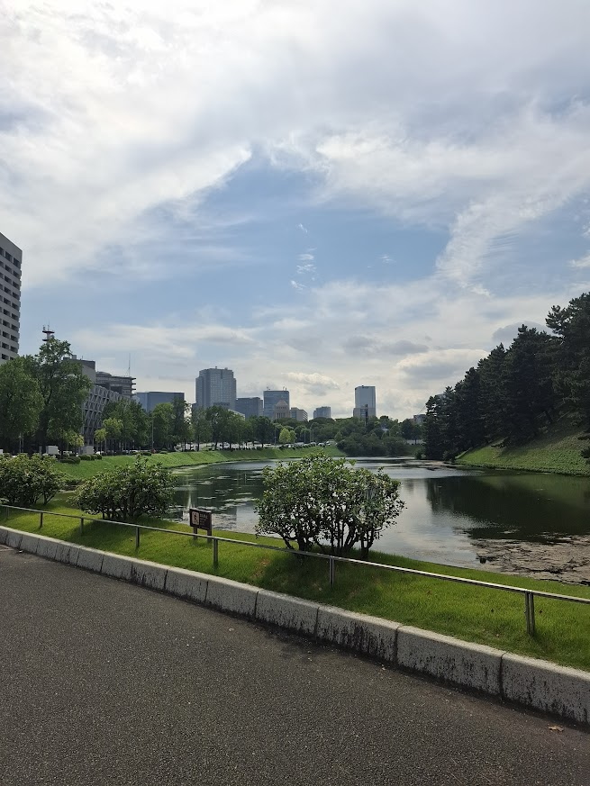
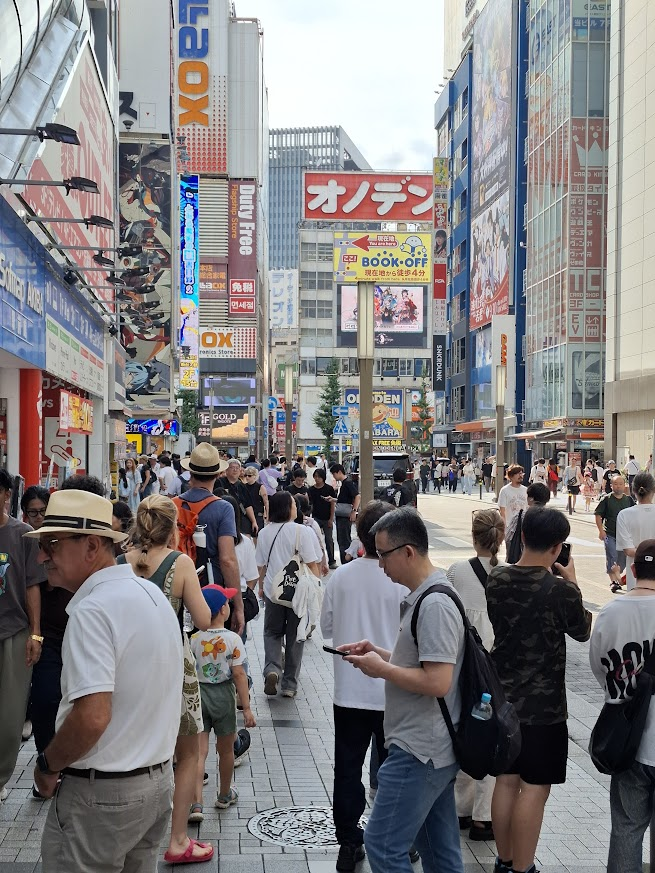
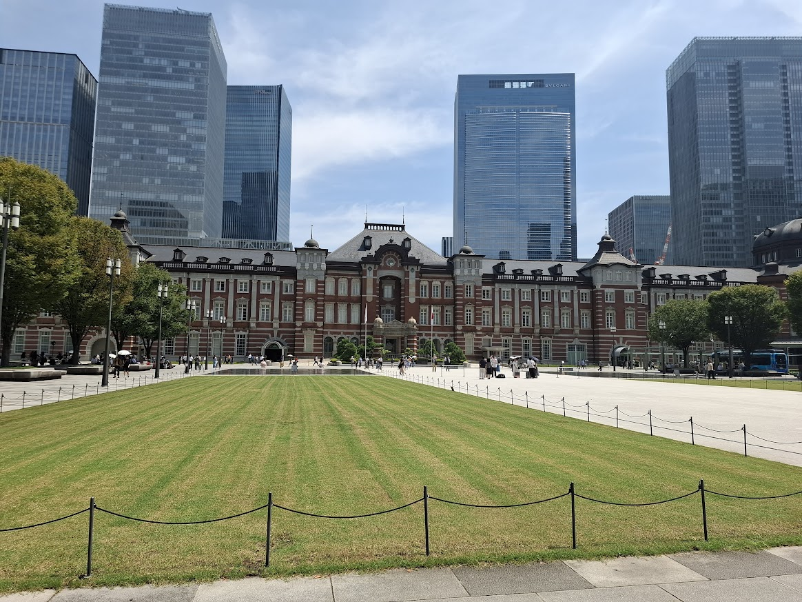
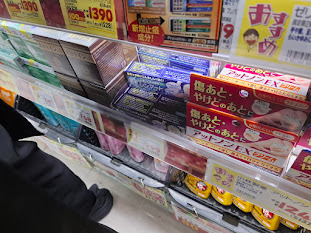
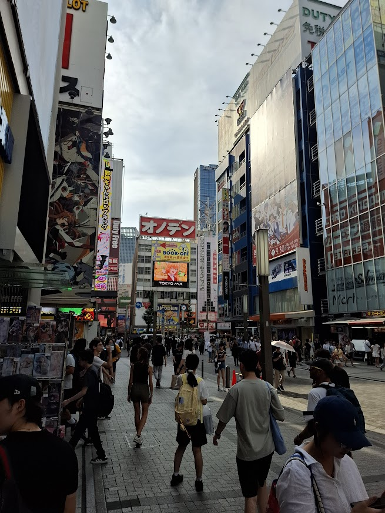
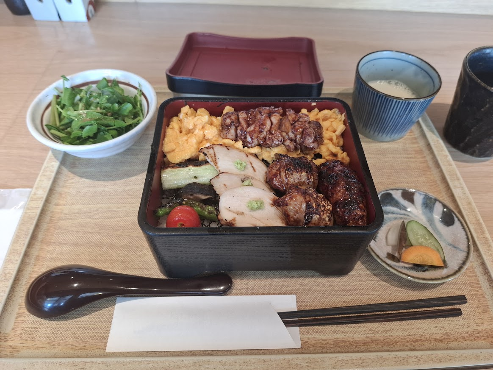
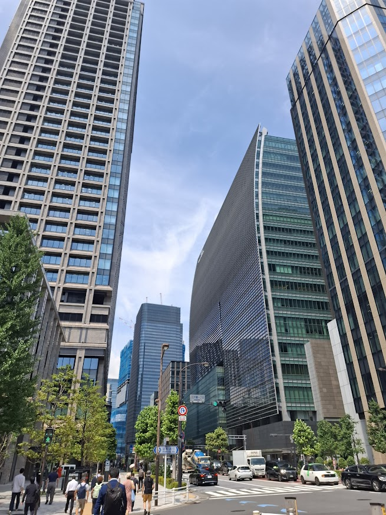
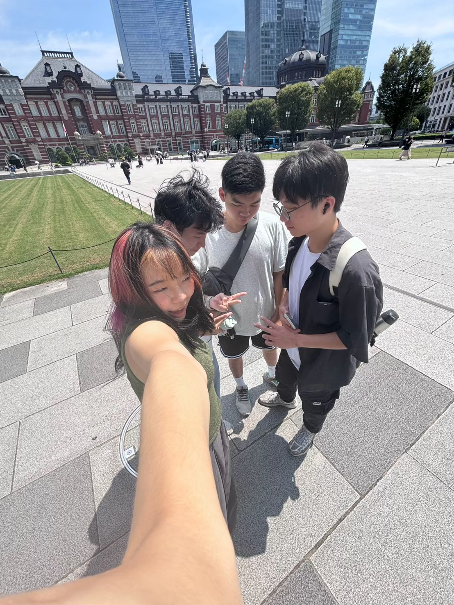

千代田區位於東京23區正中心，是日本的政治與經濟中樞，同時融合了莊嚴的皇居綠意與繁華的秋葉原動漫文化。

皇居（二重橋）
日本天皇的居住地，周圍被護城河與茂密綠樹環繞，著名的「二重橋」是遊客必拍的經典地標。

秋葉原電器街
世界知名的動漫、電玩與電子產品聖地，街道兩旁林立著大型電器行、模型店與女僕咖啡廳。

東京車站（丸之內站舍）
擁有百年歷史的紅磚復古建築，是東京最重要的交通樞紐，夜晚點燈後更是充滿浪漫氛圍。
旅遊照片紀錄




